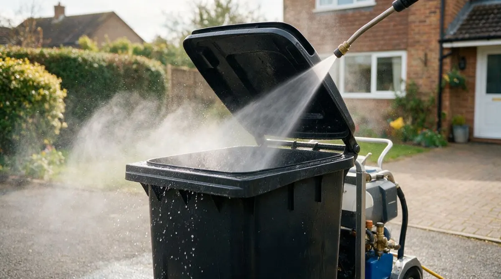
Wheelie bin cleaning
General waste bins washed inside and out with hot, high-pressure water, including the lid, rim and handles.
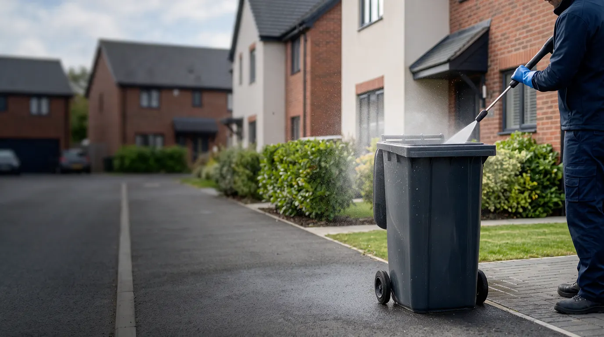
Wheelie bin cleaning across North Devon. Cleaned, sanitised and deodorised every 4 weeks, on a day that suits you. Regular plans from £5.99 per clean, or a one-off clean from £12.50. Booked and paid online.
General waste, recycling, garden and food caddies. Each one is washed inside and out, sanitised and left smelling fresh.

General waste bins washed inside and out with hot, high-pressure water, including the lid, rim and handles.
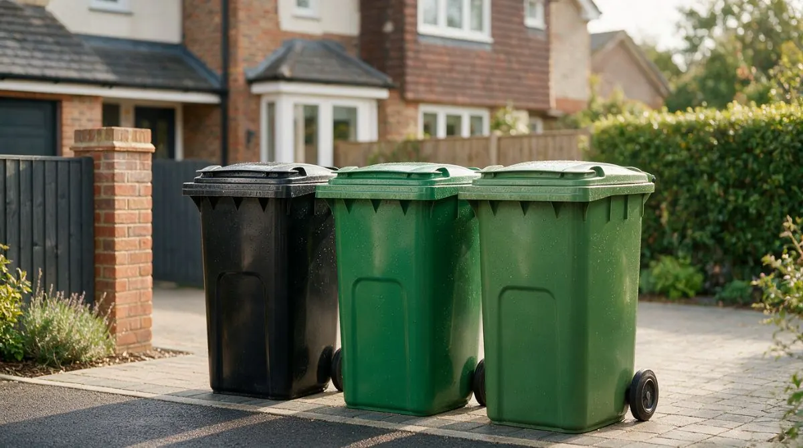
Recycling bins, garden waste bins and food caddies, cleaned on the same visit so everything is done at once.
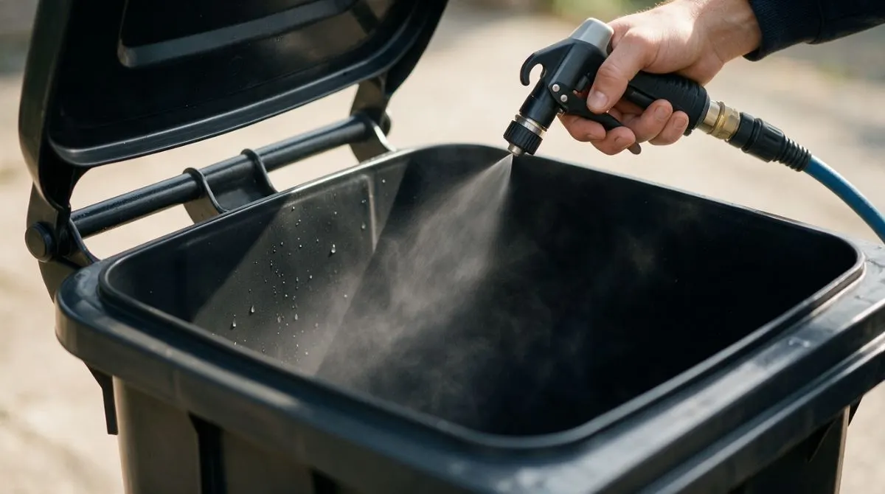
Every clean finishes with a sanitising treatment and a fresh deodoriser to keep smells down between collections.
Regular plans are one price per visit, paid automatically by card through Square. No contract, and you can pause or cancel whenever you need to. Just want a single clean? See the one-off prices.
£5.99 every 4 weeks
One wheelie bin of your choice, cleaned, sanitised and deodorised.
Book this plan£9.99 every 4 weeks
Ideal for general waste and recycling together.
Book this plan£12.99 every 4 weeks
General waste, recycling and garden or food bin.
Book this plan£12.50 for 1 bin
No plan needed for one-off cleans. More than three bins? Ask for a quote. Running a business? See commercial bin cleaning.
Choose how many bins and pick a start date on our booking page.
Put your bins out on the day you chose. Empty bins get the best clean.
Washed, sanitised and deodorised at the kerbside. No mess left behind.
Your plan repeats automatically and is paid by card through Square. Nothing else to remember.
Grime, residue and smells removed in a single visit, leaving the bin clean, sanitised and dry.
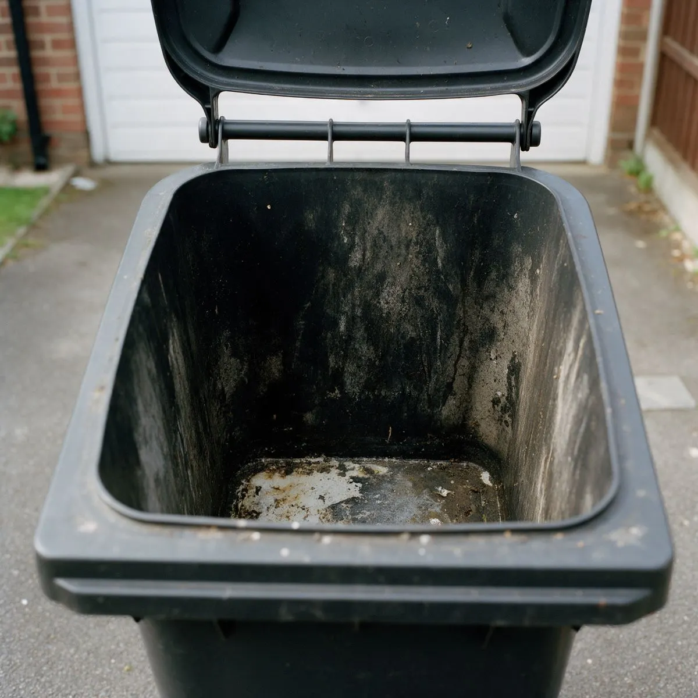
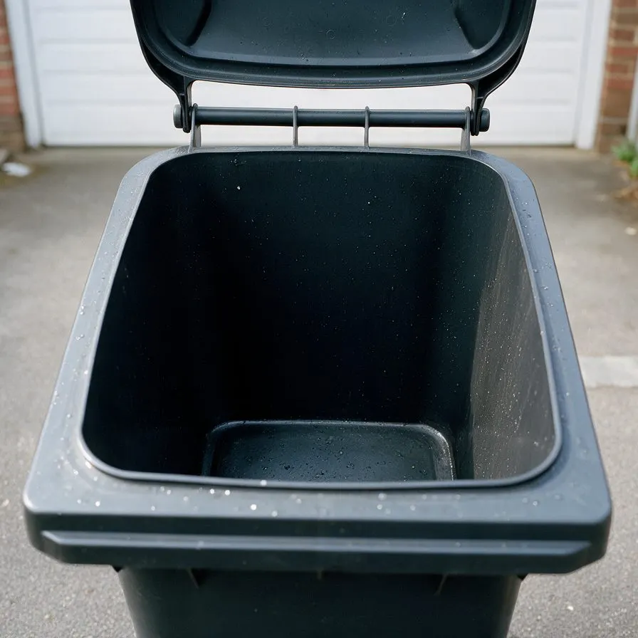
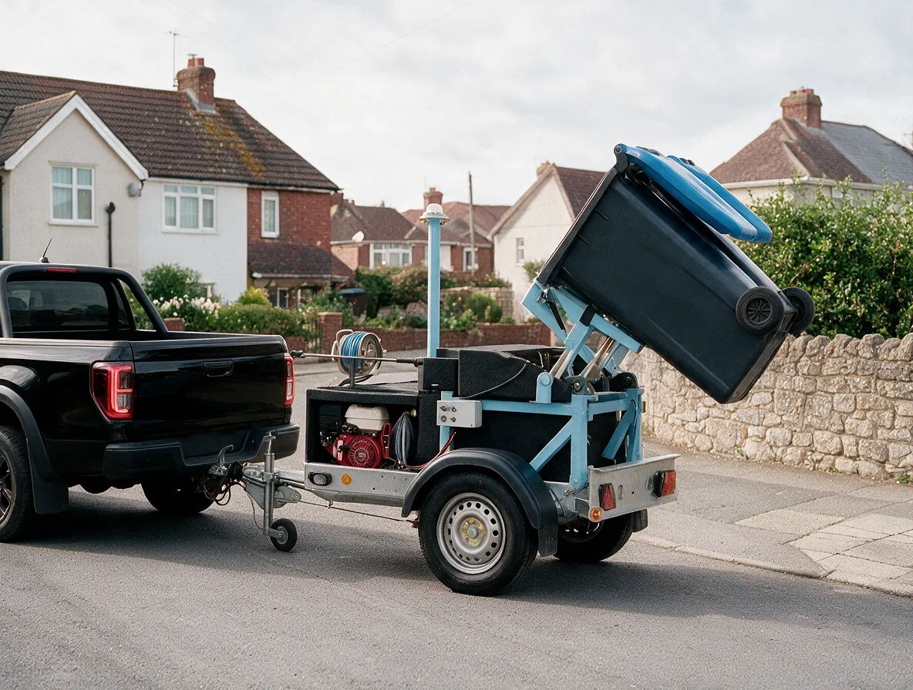
Bins build up residue, bacteria and smells between collections, especially in warmer months. A regular clean keeps them in check without you having to do the job yourself.
Residue left in the bottom of a bin is the main cause of bad odours.
A clean bin gives flies nowhere to lay eggs, which matters most in summer.
Sanitising reduces bacteria on the handles and lid you touch every week.
No hosepipe, no dirty water on your drive and no chemicals to buy.
We clean bins in Ilfracombe, Braunton, Barnstaple, Bideford, Croyde, Woolacombe and the villages around them. If you can't see your town listed, get in touch and we'll let you know if we cover your street.
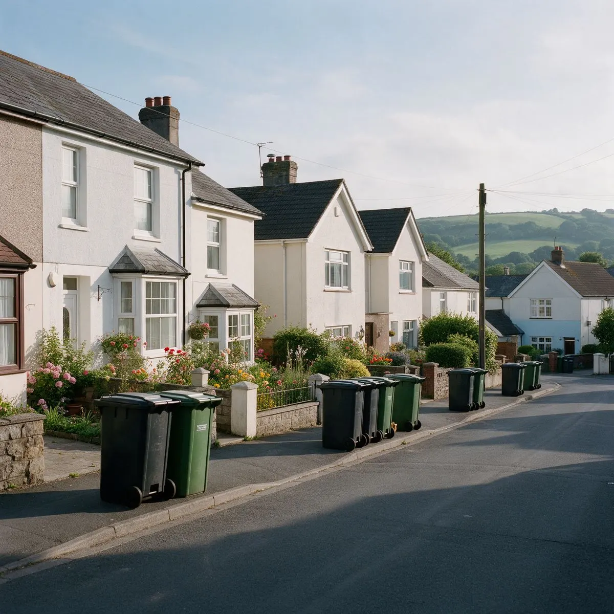
We clean bins for businesses and organisations across North Devon, from single takeaways to schools and large residential blocks. Prices start from £9 per bin and every site is cleaned on a schedule that fits your collections: weekly, fortnightly or every 4 weeks.
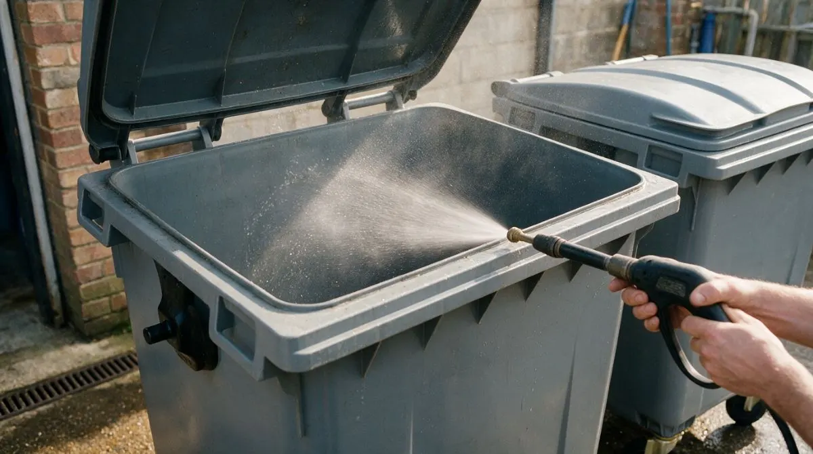
Four-wheeled 660L and 1100L bins collect residue that a hosepipe won't shift. We wash them inside and out with hot, high-pressure water, then sanitise and deodorise each one before it goes back in place.
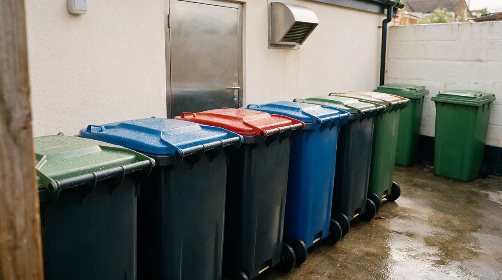
Food waste bins are the quickest to smell and the most likely to attract flies and pests. Regular cleaning keeps the back of house area tidy and helps you meet the hygiene standards your customers and inspectors expect.
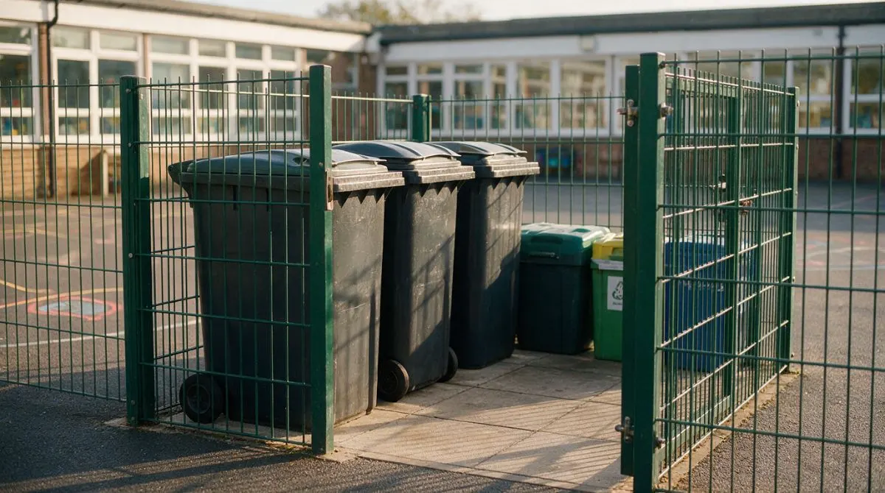
Bins near playgrounds and kitchens need to stay clean and safe. We work around your timetable, cleaning before the school day starts, after it ends or during the holidays, so there's no disruption on site.
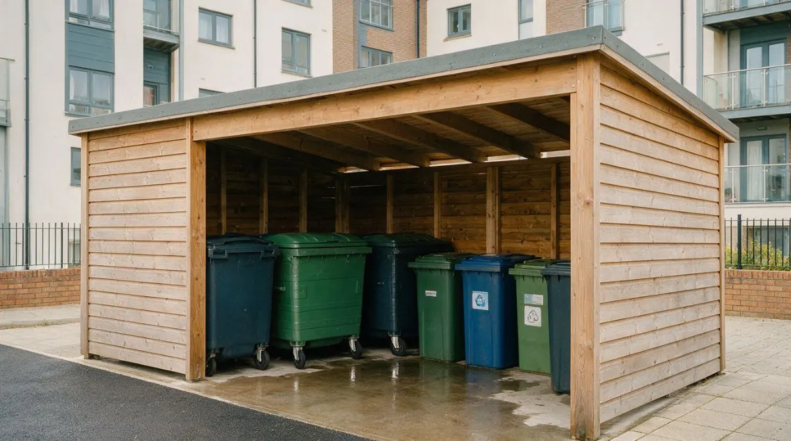
Shared bins are used by lots of people and cleaned by no one. We look after bins and bin stores for care and nursing homes, holiday parks and managing agents, so residents and guests aren't met with bad smells.
Prices per bin, per clean. For larger sites with lots of bins, get in touch for a quote.
| Bin size | One-off clean | Regular 4-weekly |
|---|---|---|
| 240LStandard household wheelie bin | £14 | £9 |
| 360LLarge household wheelie bin | £18 | £12 |
| 660LSmall commercial 4-wheel bin | £28 | £18 |
| 1,100LLarge commercial 4-wheel bin | £40 | £25 |
Tell us how many bins you have, what sizes they are and how often they're collected, and we'll send you a quote.
Get a Commercial QuoteAnything else, send us a message and we'll get back to you.
Yes. You do not need a plan. Choose a one-off clean when you book online, pick a day that suits you and pay by card. One-off cleans cost £12.50 for 1 bin, £22 for 2 bins and £30 for 3 bins.
A one-off clean is £12.50 for 1 bin, £22 for 2 bins and £30 for 3 bins. A large 360L bin is £15, and a very dirty bin or deep clean is £20.
A deep clean is for bins that have not been cleaned for a long time or have heavy build-up, such as dried-on food, mould or strong smells. It takes longer, so it is priced at £20 per bin. We will let you know if we think a bin needs one.
Our plans cost £5.99 for 1 bin, £9.99 for 2 bins or £12.99 for 3 bins, per clean, every 4 weeks. One-off cleans cost £12.50 for 1 bin, £22 for 2 bins and £30 for 3 bins, and commercial bins are priced per site.
We cover Ilfracombe, Braunton, Barnstaple, Bideford, Croyde, Woolacombe and the villages around them in North Devon. If you are not sure whether we cover your street, send us a message with your postcode.
For most homes, every 4 weeks keeps smells and bacteria under control. Food waste bins and commercial bins may need cleaning more often, especially in summer, so we also offer weekly and fortnightly visits for businesses.
Whenever suits you. You choose the day and time when you book through Square Appointments, and your plan repeats every 4 weeks from that date. We recommend a day soon after your collection, when your bins are empty.
No. As long as your bins are accessible at the kerbside or on your drive, we can clean them while you are out.
You book and pay securely through Square Appointments. Your card is saved when you make your first booking and charged automatically every 4 weeks, after each clean. You only set this up once.
Yes. There is no contract. Let us know before your next clean and we will pause or cancel your plan.
Yes. We clean commercial bins for schools, nurseries, takeaways, restaurants, pubs, care and nursing homes, offices, shops, holiday lets and communal bin stores. Commercial work is priced per site, so get in touch for a quote.
Choose your plan, pick a day that suits you and add your address. Booking and payment are handled securely by Square.
Booking not loading? Open the booking page in a new tab. Secure booking powered by Square.
For more than three bins, one-off cleans or commercial properties, send us a few details and we'll reply with a price.
We'll get back to you within one working day. If you'd rather start straight away, you can book a regular clean now.